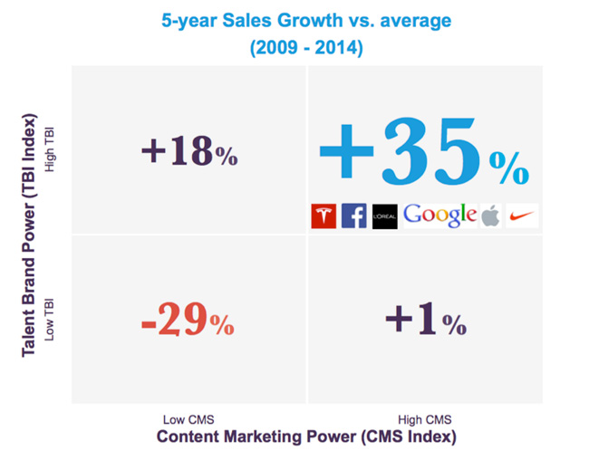
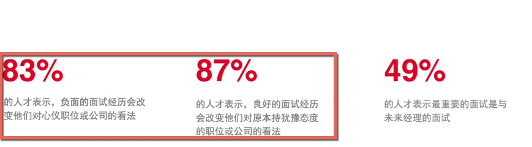
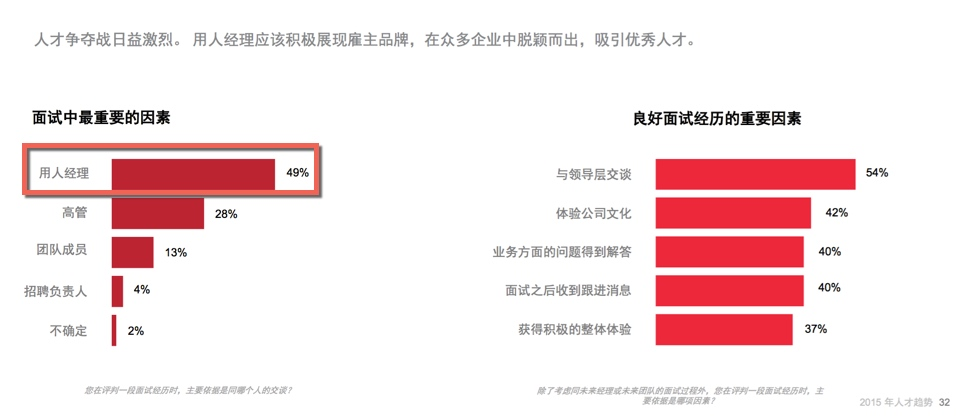

面试体验：像谷歌一样，别吓他们
在 谷歌的网站 上，可以找到这样一个实践，它说：
Google wants interviewing to be part of every Googler’s job
谷歌希望面试成为每个员工职责的一部分。
然后在文章中，它列出了谷歌招聘团队对面试官们的培训和支持的方法，以此达成让面试工作可以成为每一个谷歌人工作中的一部分。
看完他们的做法，我在想这是否也是另一种意义上的 “全员招聘”。
一起做，高成长
市场竞争激励，高素质人才难求，越来越多的公司将各部门力量投入到招聘中，不仅促进了招聘效果的提升，也给业务带来了更多发展。
Matt Renart 提供的 数据显示, 在市场部门的参与协同下，不仅招聘部门和市场部门各自都得到了好处，更使得企业增加了 35% 的销售额。
为了提升招聘体验和加快招聘效率，更多的部门在人力资源部门的引导下，让成员们投入到以下环节，提供更多支持。比如：
Team 展示—— 团队成员、团队气氛 、团队间交流风格
部门多成员一起参加面试，投入到面试环节——面试并一起做出录用决策
投入到新人 Onboarding（接待、指定同事指导 ）
成败在此
招聘的实践环节中， 贯穿其中、也最受关注、关乎面试成败的自然是面试体验。

而在面试体验中，候选人与用人部门面试官的沟通对面试体验的影响最大 。
比如谷歌，它之所以希望面试成为每个员工职责的一部分？主要还是因为相比公司职位与福利，候选人关更注与用人部门面试官的沟通。
谷歌内部调研显示，在招聘体验上，候选人提及最多的是他们与面试官的交流——对大部分候选人来说，这方面的重要性高于岗位类别、福利、也高于与招聘人员的交流；
在中国，候选人的面试经历中，他们看重的最重要的因素不是招聘负责人，而是与部门面试官的，特别是用人经理。 2015 年人才趋势报告的数据揭示

结果不同
招聘其实也是企业的一种销售——将企业岗位 “销售” 给合适的候选人。
求职者是公司潜在客户，好的、坏的体验带来极不同的结果。只是大部分的招聘人员未觉察或者不愿如此察觉。
好的实践，如谷歌，为公司带来了更多的资源。
被谷歌面试过和拒绝的人员中，有 80% 的人说他们会推荐朋友来申请谷歌的工作。
相反，不好的面试体验带来的不仅是招聘资源的损失，也是营收的流失。坏的实践，比如，一个容易忽视，不显眼的环节——面试后，候选人没有得到面试反馈，会如何呢？
有 58% 没有收到目标公司答复的应聘者，较少可能购买该公司产品；更惊人的是，面试后没有得到结果反馈的人中有 65% 也有这样的倾向。
结果大不同，你希望看到哪种结果呢？
照顾好他们
以上提醒我们一个基本事实：大家都喜欢好的面试体验，没有人喜欢坏的面试体验。
你的候选人他们自然也不会喜欢。他们像你的客户一样，也希望得到优质的服务。
所以像谷歌一样，培养好面试官，照顾好候选人。
传递企业的优质文化，提升面试体验，别吓他们。
欢迎联系 Arvin Yu , 邮箱：yuyandong@outlook.com
本作品采用 知识共享署名-非商业性使用-禁止演绎 3.0 Unported许可协议 进行许可。
Copyright © 2019 Modified by ArvinYu, Theme used GitHub CSS.